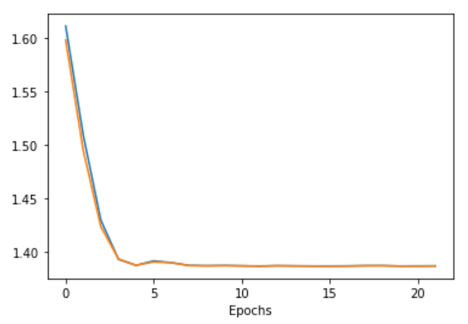
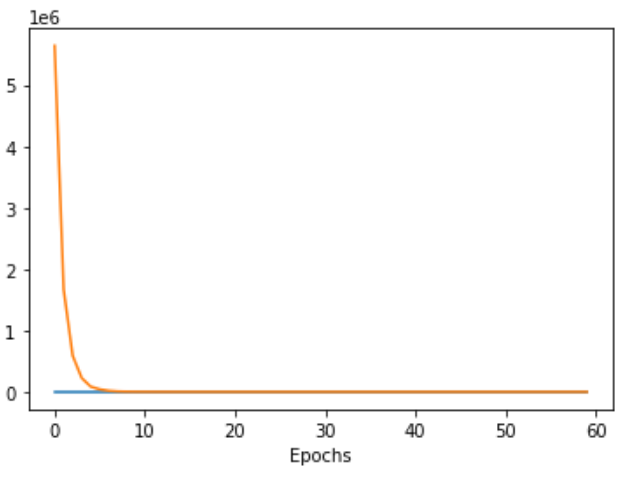

Análise dos dados
Lenet5
Gráfico de LOSS
Matriz de Confusão

Pontuação de precisão: 0,25
mobilenet_v3_small
Gráfico de LOSS
Matriz de Confusão

Pontuação de precisão: 0.272
Conclusão
Podemos observar que a LeNet5 não tem força suficiente para resolver nosso problema, com a mobilenet_v3_small obtemos uma melhora mas ainda não o suficiente para resolver o problema, mas a resnet50 sim tem potencial para resolver nosso problema, com alguns ajustes podemos obter ótimos resultados.
Minha primeira sugestão é refazer totalmente o dataset, escolhendo imagens estratégicas e que façam sentido para o problema, outra sugestão seria melhorar o treino, e também fazendo o ajuste do LR para 0.01, com esses ajustes podemos ter resultados significativos com a resnet50.